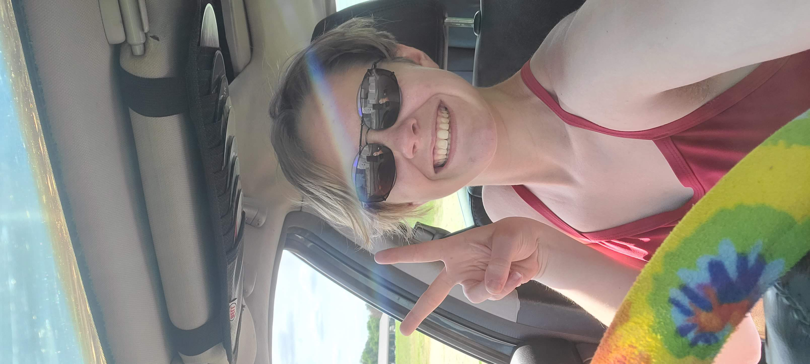

I graduated from Essex High School with an advanced diploma and completed the Chesapeake Bay Governor's School (CBGS) program through Rappahannock Community College. I have been taking college level courses since 2017, either through RCC, CBGS, or high school dual enrollment. By the end of July this year, I will have completed my Associate's of Arts and Sciences degree through RCC, and this spring, I hope to attend VCU to study marine biology.
I am taking this course primarily because I enjoy it. This summer/fall, I plan to begin buying parts to build a gaming PC, and I think that the information in this course will be extremely helpful in this passion project. Career wise, I hope to pursue environmental sciences. I very much enjoy partaking in field work but also understand the importance of impacting environmental policy. I hope to find a good balance of the two in my future. A few months ago, two Virginia Marine Police happened to stop at the airport where I work, and after some conversation, they suggested I consider an internship with them. I believe that if I play my cards right, I will be able to find a way to adequately utilize a variety of my eclectic passions within one line of work.
